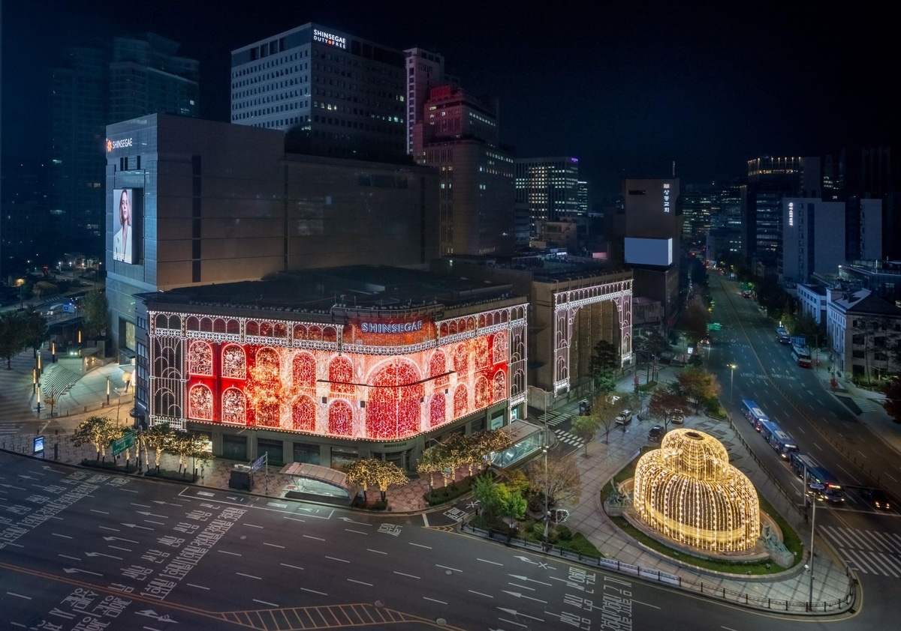
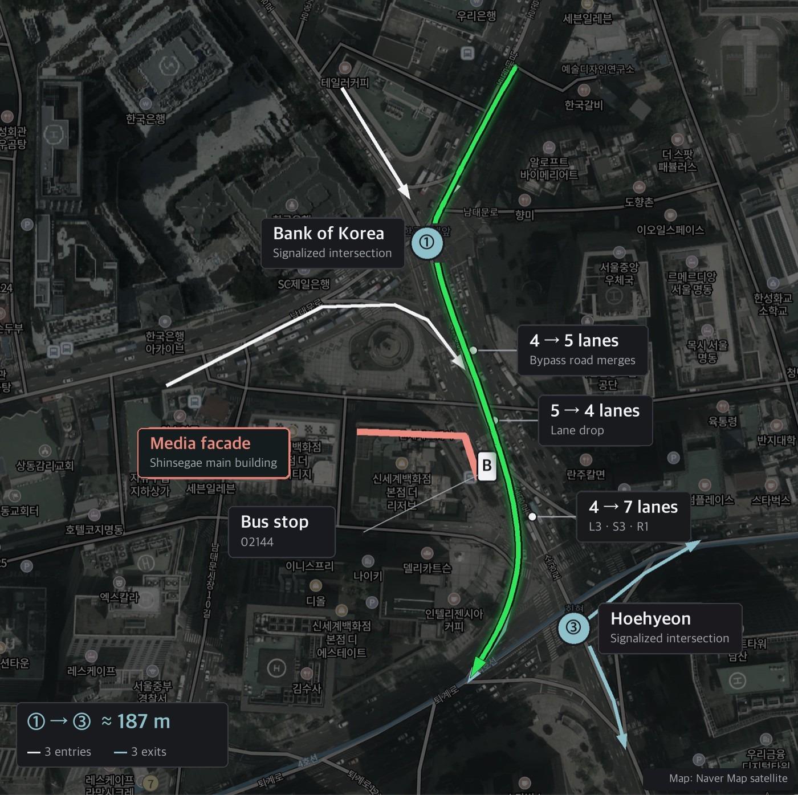
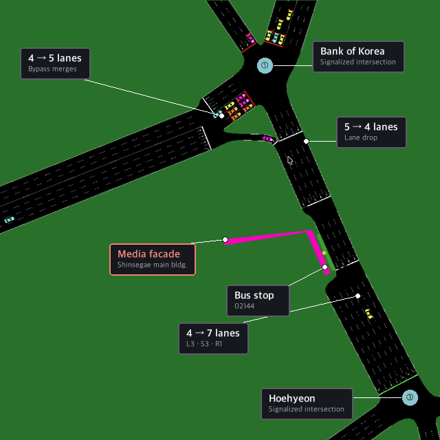
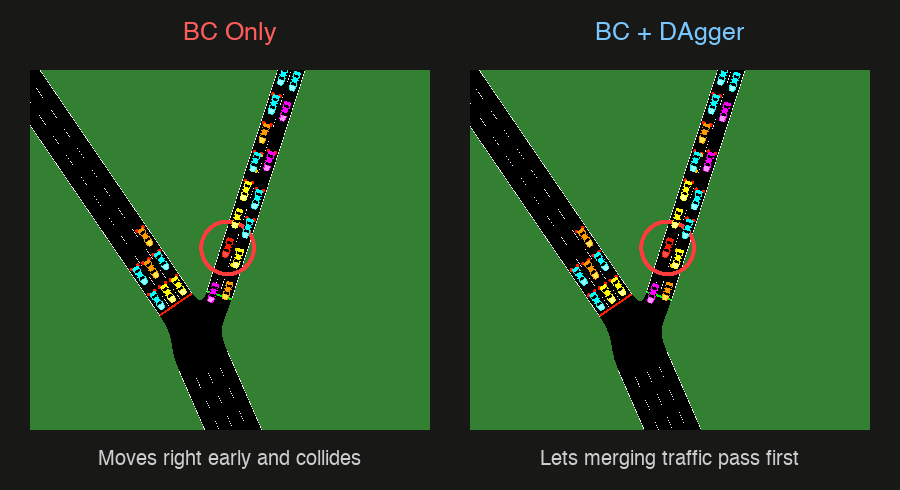
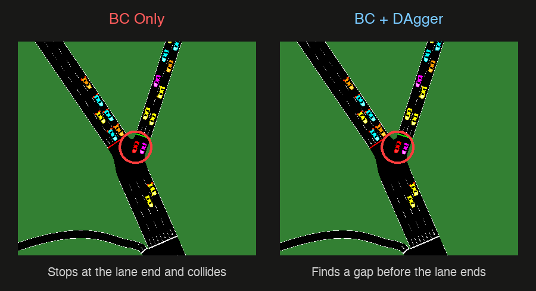
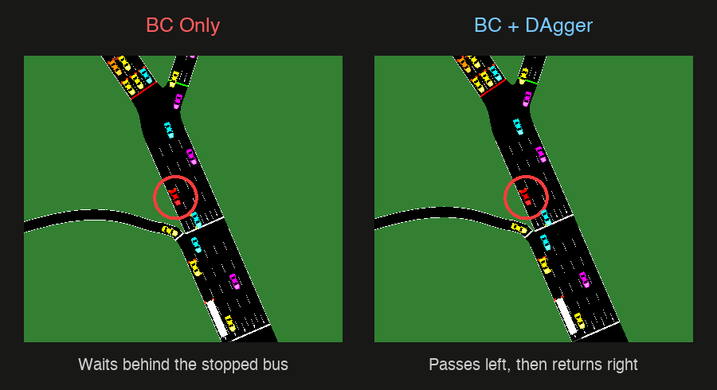
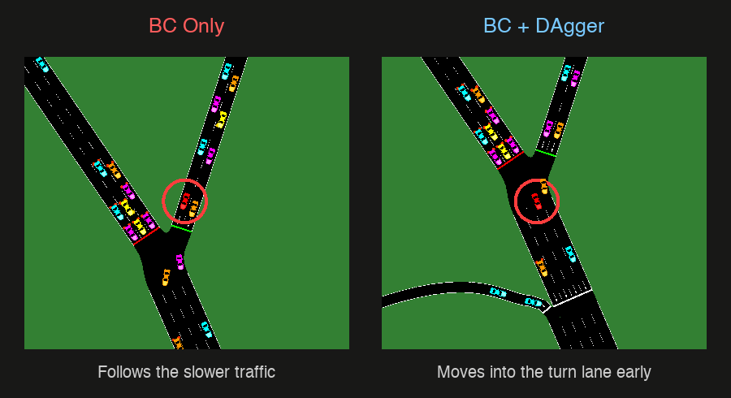
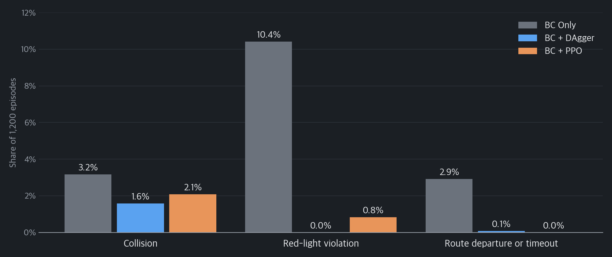
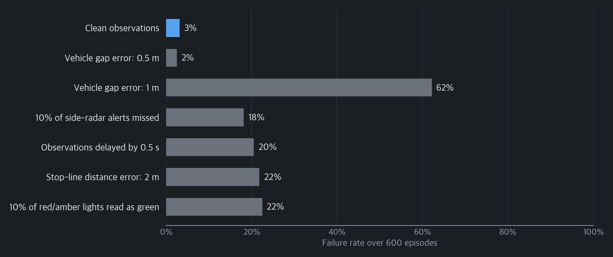

BC alone had the most red-light violations and route departures of the three models.
- Collisions
- 38 (3.2%)
- Red-light violations
- 125
- Route departures
- 35
- Timeouts
- 0
- Failed episodes
- 155
- Mean section time
- 21.48 s
Jiwon Song·Junmin Kim·Huiro Yun·Gwonhyeok Kang· Sungkyunkwan University
Sungkyunkwan University
On a Christmas evening in Seoul, drivers slow down to watch the lights on the Shinsegae department store. For a passenger heading home, one short stretch of road poses a surprisingly difficult problem: can the car get across traffic in time to turn right?
We recreated Sogong-ro in SUMO, from the Bank of Korea to Hoehyeon Intersection in central Seoul. We trained a driving policy on the route and recorded its journeys. In our Christmas scenario, extra traffic arrives to see the holiday display, and some drivers slow down outside the store. To reach the right-turn lane, the car must adjust its speed to nearby traffic and decide whether to wait behind a stopped bus or pass it.
We began with behavior cloning (BC) to learn from a rule-based driver. With Dataset Aggregation (DAgger), the car then drove on its own and received expert labels for the situations it encountered. Across 1,200 evaluation episodes in four traffic conditions, the final policy had a 1.6% collision rate, with no red-light violations or route departures.

The car starts in the far-left lane near the Bank of Korea. About 187 m later, it needs to turn right at Hoehyeon Intersection. To get there it must reach the far-right lane, which also serves a bus stop. If a bus is stopped, the car can wait or pass it and merge back. Most lane changes and merges happen in the roughly 150 m after the first signal. We call this the weaving section and measure how long each policy takes to clear it.


Drivers cross each other’s paths to reach different exits. Which gap will get the car into the right-turn lane?
A side road joins from the right, then five lanes narrow to four. Should the car merge ahead or let another driver in first?
A bus is stopped in the right-turn lane. Is there room to pass and merge back before the turn?
Traffic rises to 1.5 times its usual volume, and cars slow down outside the light display. Should the car follow or change lanes?
Each winter, a light display covers the façade of the main Shinsegae store. Some drivers slow down to watch. We modeled that change in traffic and used both everyday and holiday conditions for training and evaluation.
Behavior cloning (BC) treats driving as a supervised learning problem. Given what the car can observe, the network learns to accelerate, brake and change lanes as the expert would.
A rule-based driver completed 1,000 episodes in everyday and Christmas traffic, generating roughly 400,000 (observation, action) pairs.
The policy receives only information a driver or an onboard sensor could obtain.
| Indices | Signal | What it tells the car |
|---|---|---|
| [0] ~ [30] | Speed, gaps and relative speeds ahead and behind across five lanes, lane connectivity and density | The base observation describes nearby traffic and the road ahead. |
| [31], [32] | Next signal phase and distance to the stop line | The policy must decide when to stop for a light. |
| [33], [34] | Left and right side radar | Detects cars within roughly 2.5 m alongside the vehicle, a blind spot in the base observation. |
| [35], [36] | Direction of the next turn and distance to it | Provides map-level navigation cues. |
| [37] | Camera flag for a bus stopped at the bus stop within 80 m ahead | Distinguishes a bus making a 20-second stop from other traffic. |
| Parameter | Value |
|---|---|
| Optimizer | Adam |
| Epochs | 30 |
| Learning rate | 0.0003 |
| Batch size | 256 |
| Discount factor | 0.99 |
| Training seed | 0 |
| Lane-change weight | Lane changes account for only 0.66% of actions, so their examples receive a higher weight. |
A little extra acceleration near a stop line puts the car in a position the expert never demonstrated. Starting with the BC policy, DAgger lets the car visit those unfamiliar states and asks the expert what it would do there.
We label the states the learner visits with the rule-based driver’s actions and add those observation–action pairs to the original demonstrations.
The architecture stays the same: 38 inputs feed the network that predicts acceleration and lane choice. After each round, we retrain it on all examples collected so far.
We compared two ways to handle states outside the training distribution. Starting from BC, DAgger adds expert corrections, while Proximal Policy Optimization (PPO) fine-tunes the policy using rewards from its own drives. We selected BC + DAgger because it had the fewest failed validation episodes.
BC alone had the most red-light violations and route departures of the three models.
The final model had the lowest collision rate and completed evaluation with no red-light violations or route departures.
PPO had more collisions and red-light violations than DAgger. Its mean section time of 22.71 s was the longest of the three.
In each of three rounds the learner drove 400 episodes without handing control to the expert (β = 0). The expert labeled each observation. We then trained a fresh network on the original demonstrations and all examples gathered to date.
| Parameter | Value |
|---|---|
| Initialization · Training steps | Initialized from BC and fine-tuned for 400,000 steps |
| Traffic | Mixed everyday and Christmas traffic with triple bus frequency |
| Learning rate | 0.00005 |
| Rollout length | 2,048 steps |
| Update epochs · Minibatch size | 10 · 64 |
| Discount factor γ · GAE λ | 0.99 · 0.95 |
| Clip range ε | 0.2 |
| Value function V(s) · Critic | |
| Value loss coefficient | 0.5 |
| Entropy coefficient (overall · lane choice) | 0 · 0.01 |
| Max gradient norm | 0.5 |
| Initial log σ (acceleration) | −1.5 |
| BC regularization coefficient | 0.1, using the rule-based driver’s demonstrations |
| Critic warmup | Update only the value head for the first five updates |
| Red-light violation handling | End the episode immediately during training. During evaluation, continue driving and count violations. |

Both cars crossed the signal at the same time, with traffic about to join from the right. BC moved all the way to the curb lane before the merge and collided with an incoming car. DAgger moved over one lane, then continued right after the road widened. It cleared the weaving section in 14.5 s.

Just beyond the merge, the two rightmost lanes become one. Both cars entered the lane that ends. BC reached its end, waited about 20 s for a gap and collided. DAgger found a gap before the lane ended and cleared the section in 14.5 s.

A stopped bus blocked the right-turn lane. BC waited behind it and took 41.0 s to clear the section. DAgger passed one lane to the left, then returned to the turn lane where the road widens before Hoehyeon Intersection. It took 31.5 s.

In Christmas traffic, 30% of passenger cars slow to 11 km/h outside the display. In this episode BC stayed in a middle lane behind sightseers and took 40.0 s to clear the section. DAgger moved into the right-turn lane earlier and cleared it in 15.0 s.
| Condition | Collisions | Red-light violations | Route departures | weaving section |
|---|---|---|---|---|
| Everyday traffic | 0 / 300 | 0 | 0 | 14.9 s |
| Christmas | 2 / 300 | 0 | 0 | 21.9 s |
| Christmas with 1.3× traffic (held out from training) | 5 / 300 | 0 | 0 | 25.4 s |
| Christmas with 3× bus frequency | 12 / 300 | 0 | 0 | 22.7 s |

Explore the dataset on Hugging Face ↗
Each record pairs the policy’s observation with the underlying simulator state. That extra state information is available for learning beliefs or representations, while the driving policy sees only the observation.
| Key | Type | Signal |
|---|---|---|
observation | float[38] | The 38 inputs available to the policy (see the observation table) |
action_raw, action.* | float[2], dict | Acceleration and lane-change outputs, plus the lane change actually applied (−1, 0, +1) |
reward, terminated, truncated | float, bool | Reward and episode termination or truncation flags |
state | dict | Internal SUMO state |
detected_vehicles | list[dict] | Positions of nearby vehicles detected at the time of observation |
event.* | dict | Separate fields for collisions, arrivals, route departures, red-light violations, teleports and lane changes (before and after) |
next_observation, next_state | float[38], dict | Observation and state at the next step |
The final policy learned from clean observations. When we introduced measurement errors at evaluation time, even a 1 m error in the gap to a nearby vehicle or a delay of 0.5 s sharply increased the failure rate. Training with noisy observations is a necessary step toward using this policy with real sensors.
